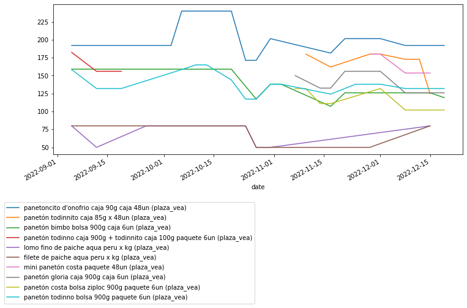
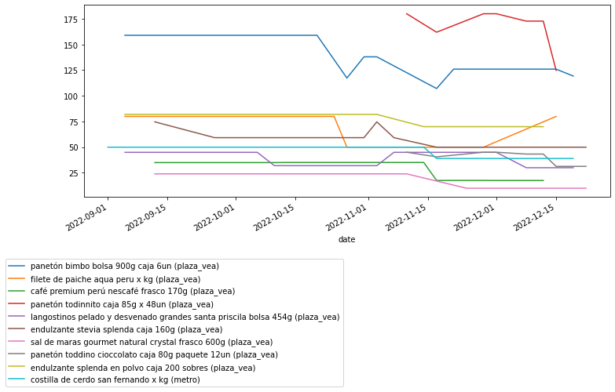
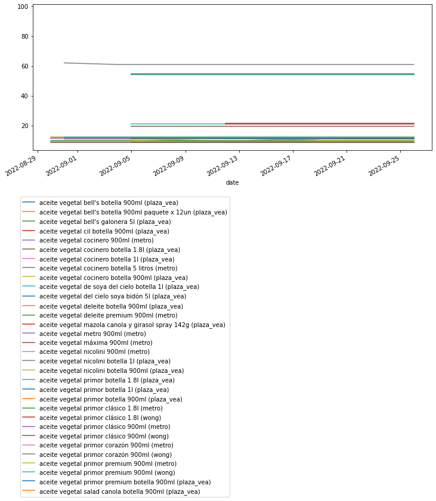
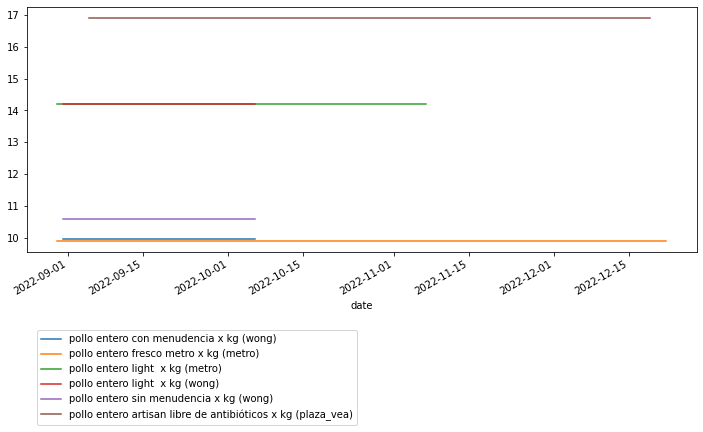
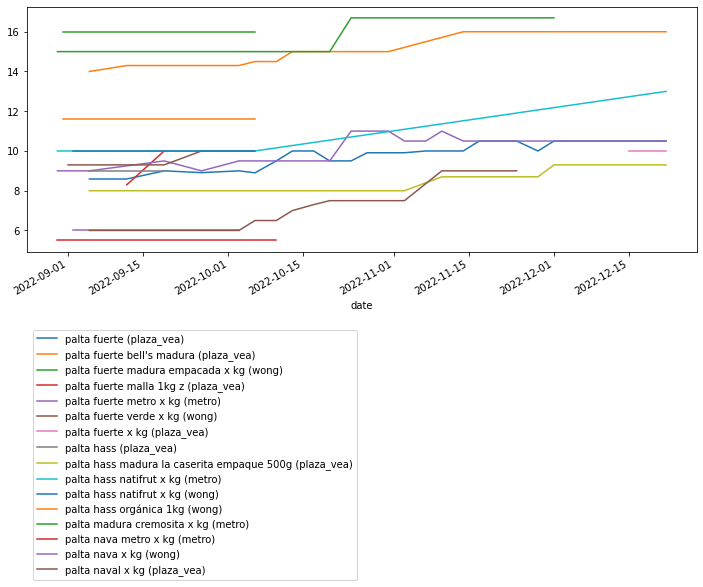
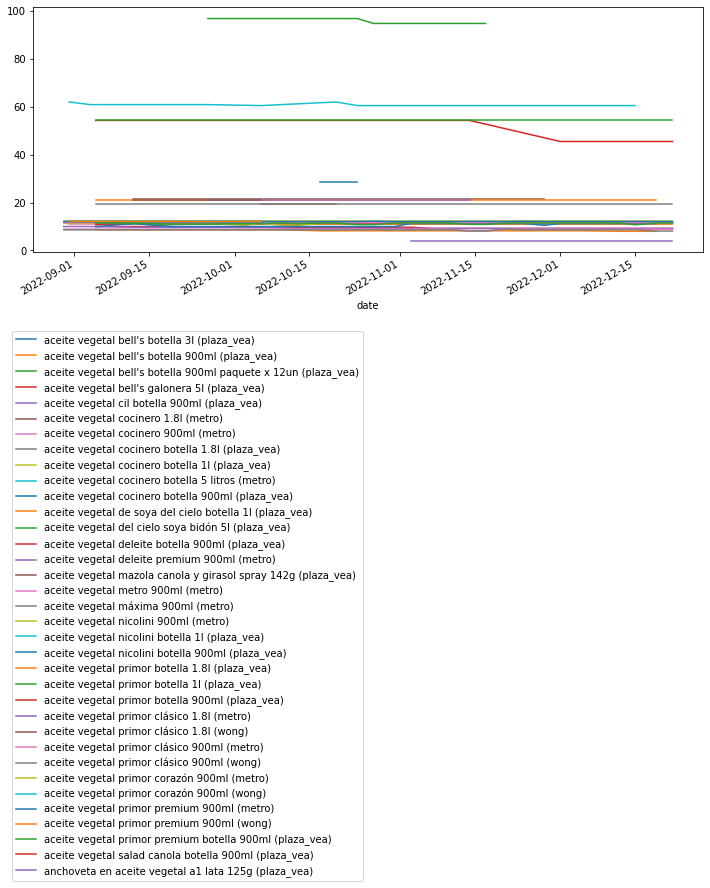

Code
explore_types = ['frutas', 'lacteos', 'verduras', 'embutidos', 'panaderia', 'desayuno', 'congelados', 'abarrotes',
'aves', 'carnes', 'pescados']explore_types = ['frutas', 'lacteos', 'verduras', 'embutidos', 'panaderia', 'desayuno', 'congelados', 'abarrotes',
'aves', 'carnes', 'pescados']path = Path('../../output')
csv_files = L(path.glob('*.csv')).filter(lambda o: os.stat(o).st_size>0)
pat_store = re.compile('(.+)\_\d+')
pat_date = re.compile('.+\_(\d+)')
df = (
pd.concat([pd.read_csv(o).assign(store=pat_store.match(o.stem)[1], date=pat_date.match(o.stem)[1])
for o in csv_files])
.pipe(lambda df: df.assign(
name=df.name.str.lower(),
sku=df.id.where(df.sku.isna(), df.sku).astype(int),
date=pd.to_datetime(df.date)
))
.drop('id', axis=1)
.loc[lambda d: d.category.str.contains('|'.join(explore_types))]
)
df.sample(3)| brand | uri | name | price | category | store | date | sku | |
|---|---|---|---|---|---|---|---|---|
| 2694 | MOLINOS DEL MUNDO | https://www.plazavea.com.pe/pan-de-queso-molin... | pan de queso molinos del mundo bolsa 500g | 27.49 | https://www.plazavea.com.pe/panaderia-y-pastel... | plaza_vea | 2022-12-01 | 43207 |
| 106 | LA FLORENCIA | NaN | keke marmoleado la florencia | 10.50 | https://www.plazavea.com.pe/panaderia-y-pastel... | plaza_vea | 2022-12-19 | 46475 |
| 6674 | COMPASS | NaN | mermelada compass fresa pote 350g | 6.90 | https://www.plazavea.com.pe/desayunos | plaza_vea | 2022-11-03 | 49952 |
top_changes = (df
.groupby(['store','sku'], as_index=False)
.price
.agg('std')
.query('price>0')
.sort_values('price', ascending=False)
)
top_changes.head()| store | sku | price | |
|---|---|---|---|
| 8849 | plaza_vea | 10039597 | 22.721922 |
| 11384 | plaza_vea | 10734129 | 19.910084 |
| 7640 | plaza_vea | 43433 | 18.435330 |
| 8902 | plaza_vea | 10043433 | 15.242047 |
| 10535 | plaza_vea | 10523088 | 15.000000 |
fig,ax = plt.subplots(figsize=(12,5))
for _,row in top_changes.head(10).iterrows():
(df
.query('store==@row.store and sku==@row.sku')
.assign(name=lambda d: d.name+' ('+d.store+')')
.pipe(lambda d: d.plot(x='date', y='price', label=d.name.iloc[0], ax=ax))
)
ax.legend(bbox_to_anchor=(0.5,-0.3));
top_drops = (df
.sort_values('date')
.pipe(lambda d: d.assign(**d
.groupby(['store','sku'], as_index=False).price
.transform(lambda d: d.rolling(3).mean())
.loc[:,['price']]
))
.dropna()
.groupby(['store','sku'], as_index=False)
.price
.agg(['first','last'])
.assign(diff=lambda d: d['last']-d['first'])
.reset_index()
.sort_values('diff')
)
top_drops.head()| store | sku | first | last | diff | |
|---|---|---|---|---|---|
| 6058 | plaza_vea | 43433 | 159.0 | 123.763333 | -35.236667 |
| 7847 | plaza_vea | 10523087 | 79.9 | 59.900000 | -20.000000 |
| 6793 | plaza_vea | 10040970 | 34.9 | 17.450000 | -17.450000 |
| 8369 | plaza_vea | 10734129 | 174.0 | 156.800000 | -17.200000 |
| 7955 | plaza_vea | 10571894 | 44.9 | 29.900000 | -15.000000 |
fig,ax = plt.subplots(figsize=(12,5))
for _,row in top_drops.head(10).iterrows():
(df
.query('store==@row.store and sku==@row.sku')
.assign(name=lambda d: d.name+' ('+d.store+')')
.pipe(lambda d: d.plot(x='date', y='price', label=d.name.iloc[0], ax=ax))
)
ax.legend(bbox_to_anchor=(0.5,-0.3));
fig,ax = plt.subplots(figsize=(12,5))
for _,row in top_drops.tail(10).iterrows():
(df
.query('store==@row.store and sku==@row.sku')
.assign(name=lambda d: d.name+' ('+d.store+')')
.pipe(lambda d: d.plot(x='date', y='price', label=d.name.iloc[0], ax=ax))
)
ax.legend(bbox_to_anchor=(0.5,-0.3));
fig,ax = plt.subplots(figsize=(12,5))
for n,d in df.loc[df.name.isin(names)].assign(name=lambda d: d.name+' ('+d.store+')').groupby('name'):
d.plot(x='date', y='price', label=n, ax=ax)
ax.legend(bbox_to_anchor=(0.5,-0.3));
fig,ax = plt.subplots(figsize=(12,5))
for n,d in df.loc[df.name.isin(names)].assign(name=lambda d: d.name+' ('+d.store+')').groupby('name'):
d.plot(x='date', y='price', label=n, ax=ax)
ax.legend(bbox_to_anchor=(0.5,-0.3));
fig,ax = plt.subplots(figsize=(12,5))
for n,d in df.loc[df.name.isin(names)].assign(name=lambda d: d.name+' ('+d.store+')').groupby('name'):
d.plot(x='date', y='price', label=n, ax=ax)
ax.legend(bbox_to_anchor=(0.5,-0.3));